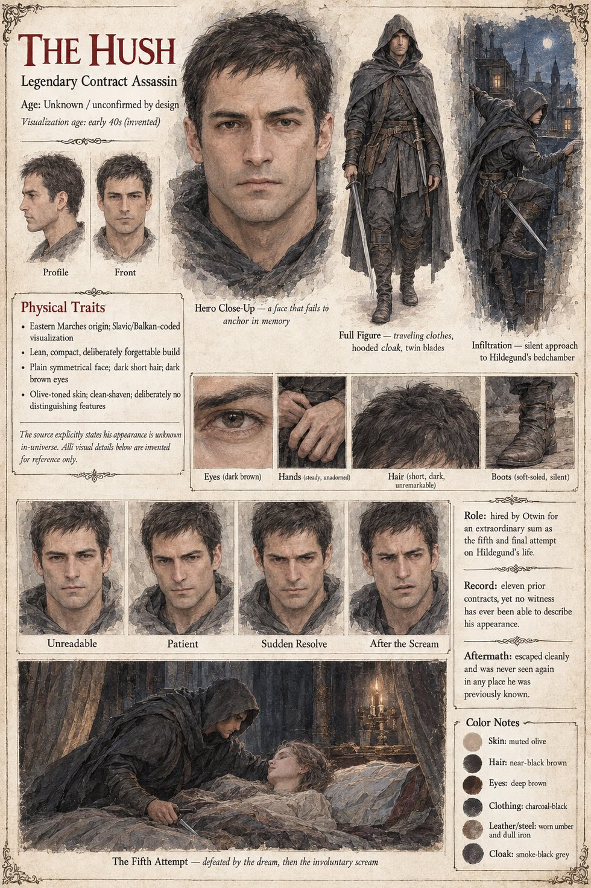

The Hush
Contract assassin of the three kingdoms east of the mountains · eleven confirmed contracts, no witness who can describe his face · age and appearance unknown by design
A man whose reputation is older than the war he is hired into, known across three kingdoms east of the mountains by a single word rather than a name: not one of his eleven confirmed contracts has produced a witness capable of describing his face, his voice or the means by which he entered a room no door recorded as having opened. He costs, by the careful accounting of Otwin's own treasurer, more than the twelve men at the clearing and the standing border company together, a sum Otwin spends two full years telling himself he will not spend and a third discovering that he will.
He comes on an unremarkable night in high summer, through a window three floors above a courtyard no ladder should have reached, and stands over Hildegund's bed for what the night's accounting puts at nearly a full minute before he moves, a minute he will later describe, in the one interview he gives, years afterwards, in a language none of Hartenmark's scholars can agree on the translation of, as the closest he has come in a long career to simple professional admiration. She sleeps, he says, like a woman who has never needed to consider that she might not wake. It is the one misjudgment of his career, and a forgivable one: she has not slept a full night through since the wine, and the fear he mistakes for rest is exactly what the sickness in her blood has been feeding on all summer. A dream, delivered whole and wordless into whatever she is already dreaming, moves her six inches to the left in the half-second the blade would otherwise have found her heart.
He does not panic, which is the single skill that has kept him alive across eleven contracts when skill alone has not been enough. He closes one gloved hand around her throat before her eyes have finished opening and reaches with the other for the shorter blade he keeps for exactly this contingency. What eleven contracts have never required him to account for is a half-strangled throat, unpractised at screaming, that produces in the one half-second left to it a sound that travels through two closed doors and down a full flight of stairs. What follows is a good deal less dignified than the songs will make it: six hours of soldiers with torches searching a castle built across four centuries by people who never designed it for a search, a rooftop chase that costs one guardsman a broken ankle and the Hush nothing, and an escape not understood until morning, when a servants' grain chute nobody had thought to guard is found missing one very old, very small and very conveniently placed grating. He is never seen again, not in Hartenmark, not in Vahlreth, not in any of the three kingdoms that had known him well enough to give him a name, which several of Otwin's own intelligencers independently decide is the most unsettling fact of the affair. Vara, sleeping uncommonly soundly half a mile away, hears none of it.
The manuscript's own point is that no one can say what he looks like, and the sheet says so too: it states that his appearance is unknown in-universe and that every visual detail on it is invented for reference. Its early-forties figure, short dark hair, dark-brown eyes, olive skin, clean-shaven, in a smoke-grey hooded cloak with twin blades and soft-soled boots, is therefore its own and not a likeness. The sheet also calls the night the fifth and final attempt on her life; the manuscript's own tally, which counts the poisoned arrow, the ford and the clearing as attempts, is seven, and the Hush is the last.